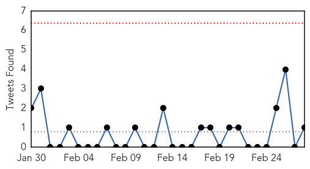

30 Day Trends
Web: 0 alerts, 0 warnings
Twitter: 0 alerts, 0 warnings
Top Articles:
- 0.978
- Flu virus levels down in Michigan
- 0.918
- ABC-7.com WZVN News for Fort Myers, Cape Coral & Naples, Florida
- 0.917
- Chicago Tribune
- 0.917
- Chicago Tribune
- 0.917
- Chicago Tribune
- 0.917
- Chicago Tribune
- 0.917
- Chicago Tribune
- 0.917
- Chicago Tribune
- 0.917
- Chicago Tribune
- 0.917
- Chicago Tribune
- 0.917
- Chicago Tribune
- 0.917
- Chicago Tribune
- 0.917
- Chicago Tribune
- 0.917
- Chicago Tribune
- 0.917
- Chicago Tribune
- 0.917
- Brisbane water bacteria linked to lung disease
- 0.910
- The world windows to Thailand
- 0.910
- The world windows to Thailand
- 0.898
- Tick test for persistent Lyme disease tried in humans
- 0.883
- KRNV, Reno, NV
- 0.883
- KRNV, Reno, NV
- 0.866
- Avalanche engulfs Montana home, injuring boy and leaving two people missing
- 0.866
- Resident carries sandbag through yard flooded by storm runoff from hillsides damaged last month by a wildfire in Azusa, California
- 0.866
- Russia says Crimea deployments based on agreements with Ukraine
- 0.866
- U.S. "gravely disturbed" by reports of Russian military deployments in Ukraine
- 0.866
- NY starts inspecting rail yards handling Bakken crude -Gov
- 0.866
- Swirling Eastern Pacific Ocean storm system headed for California is seen in an image from NOAA's GOES-West satellite
- 0.866
- Ukraine protests to Russia over airspace violation
- 0.866
- Tunisia gets $1.2 billion from the World Bank
- 0.866
- Interfax says airport in Ukraine's Crimea refusing Kiev flights
- 0.866
- Russia's Putin tells EU leaders there must be no escalation of Ukraine violence
- 0.866
- Ukraine prosecutor orders detention of 10 top former officials
- 0.866
- TABLE-Bulgaria's centre right holds slight lead in poll
- 0.866
- Ukraine asks U.N. Security Council to consider situation in country
- 0.866
- Ukraine's parliament calls on Russia not to support separatism
- 0.866
- Rpt-Ukraine leader summons security chiefs to discuss Crimea
- 0.866
- Ukraine's hryvnia rise from historic lows
- 0.866
- Russian naval fleet says has not seized Crimea airport-Interfax
- 0.774
- Flu Rate Highest in Nevada, Cold Rate Highest in Montana
- 0.757
- Beijing bans Polish pork amid African swine fever scare
- 0.746
- Sweden listeria outbreak shows decline
- 0.736
- President honours outstanding physicians
- 0.698
- Mysterious Polio-Like Ailment Found in Kids in the U.S.: Symptoms to Watch and Immediate Steps to Take- Report
- 0.687
- ABS-CBN apologizes for 'flesh-eating disease' report, says it had no intention to sow fear, panic
- 0.680
- CDC: 14 lab workers had orthopoxvirus infections in past decade
- 0.680
- Many Afghans still lack access to health care
- 0.658
- South Africa restricts movements over African Horse Sickness outbreak
- 0.625
- Germy stethoscopes can make you sick
- 0.579
- Smiths return from aid work trip to Haiti
- 0.577
- New Waterford woman suspects son has Lyme disease
Showing top 50 articles...
Top Tweets:
- 0.825
- “@WHO: On 3 & 15 February 2014 SaudiArabia announced two additional laboratory-confirmed cases of Middle East respiratory syndrome MERS”
Web/News Articles

Tweets
Article Locations

Article Confidences